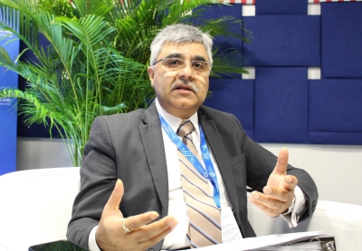

IMF official welcomes Japan’s temporary tax cut plan
Rahul Anand, IMF assistant director and mission chief for Japan, said the approach was "a very welcome step."

Rahul Anand, IMF assistant director and mission chief for Japan, said the approach was "a very welcome step."

A former minister of Guyana and that country’s ambassador to the United Nations, she stands out alongside Costa Rica’s Rebeca Grynspan as the frontrunners to succeed Antonio Guterres at the helm of an embattled organization struggling to remain relevant in today’s world
Israeli Ambassador Vivian Aisen tells TML that the countries’ foreign ministers discussed a possible application, adding a previously unannounced initiative to Bogotá’s diplomatic realignment.
Etwas Bestimmtes gesucht? Alle Meldungen durchsuchen.